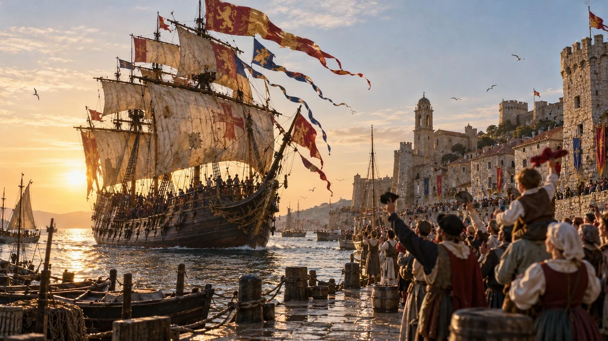
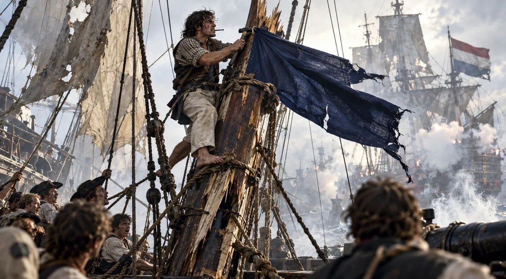
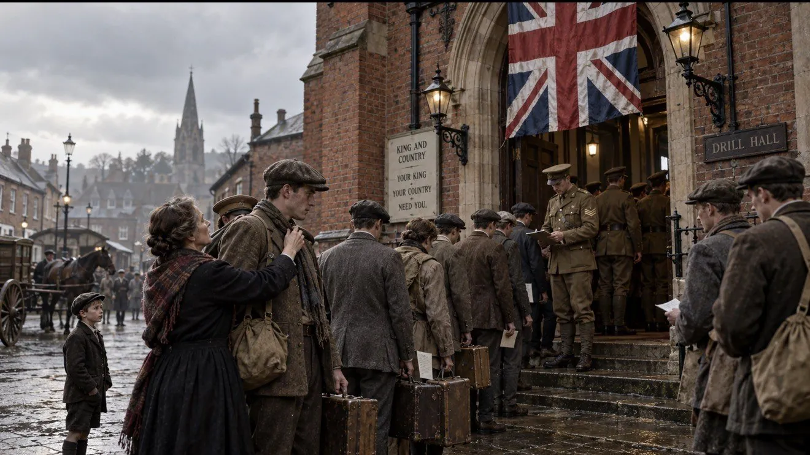
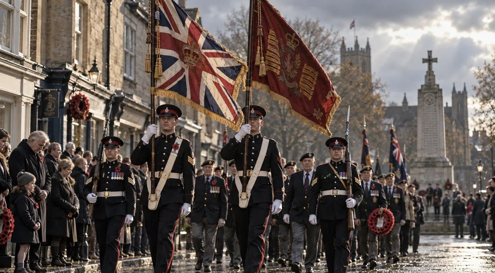

sail under false colours
冒充、欺騙
海盜的經典套路：先掛友好國家的旗子裝熟，等靠近了再翻臉，亮出真正的旗子。
例句
The “charity” was sailing under false colours; it was really a sales company.
（那個「慈善機構」其實是掛羊頭賣狗肉，本質上是一間推銷公司。）
語言與文化 課堂報告
一個片語的歷史，
與它的旗幟片語家族
開南大學應用英語學系
報告人 李青勇、梁家綺
第一章
Colours are flags
考試考得很好，英文可以說 pass with flying colours。可是，為什麼是「飄揚的顏色」？
答案藏在一個大家以為很熟的字裡：
colours=flags
字面意思：帶著飄揚的旗子。
牛津英語詞典記載，最晚 16 世紀後期，colours 就指船上掛的那一整排旗子。
團旗也叫 colours，因為旗面就是部隊制服的顏色和徽章。
所以 pass with flying colours，可不是說考卷畫得很繽紛。
第二章
The legend and the record
最常聽到的由來是這樣：打了勝仗的船，掛滿旗子回港，岸上一片歡呼。很有電影感對吧？只有一個小問題……

第三章
From retreat to triumph
17–18 世紀 戰場
come off with flying colours
保住體面、全身而退
The army surrendered the town but marched out with flying colours.
（這支軍隊雖然交出城池，卻帶著飄揚的軍旗體面撤出。）
19 世紀以後 考場
pass with flying colours
表現優異、大獲成功
She passed the exam with flying colours.
（她以優異的成績通過了考試。）
為什麼會變？
語源學者推測：武器越來越強，旗子退出了戰場，只剩勝利遊行時才出場，意思也就跟著變成「大獲全勝」。
間奏 片語家族地圖
The family
with flying colours 其實還有一整個家族。我們把它們分成三組：亮出旗子、降下旗子，還有軍隊裡跟旗子有關的儀式。點任一個片語，直接翻到那一頁。
第四章 亮出旗幟｜身分與立場
False colours, true colours
這兩個片語是同一招的上下集：先掛假旗騙人靠近，再亮出真旗。
冒充、欺騙
海盜的經典套路：先掛友好國家的旗子裝熟，等靠近了再翻臉，亮出真正的旗子。
例句
The “charity” was sailing under false colours; it was really a sales company.
（那個「慈善機構」其實是掛羊頭賣狗肉，本質上是一間推銷公司。）
露出真面目
常見說法：船先掛假旗靠近，開火前才換回真旗。
例句
He showed his true colours when he refused to help his own team.
（他拒絕幫忙自己的團隊，這才露出了真面目。）
問題是
早在 1551 年，英國牧師 Thomas Becon 就拿它來比喻「露出真面目」；連「掛假旗」也是先當比喻，後來才用在海戰上。海戰版的故事，很可能是後人補上的。
第五章 亮出旗幟｜身分與立場
公開表態、絕不退讓

旗子釘在桅杆上，就降不下來了，等於宣告絕不投降。公開表態，不留退路。
例句
The mayor nailed her colours to the mast and promised to save the old library.
（市長公開表明立場，承諾一定保住舊圖書館。）
第六章 降下旗幟｜認輸
Striking the colours
這三個都跟降旗有關：strike 是直接投降，lower 是退一步，go down with colours flying 則是輸了也輸得有骨氣。
投降、放棄
把旗子降下來，就是對敵人說：「好啦，你贏了。」
例句
After three hours of arguing, he finally struck his colours.
（爭論了三個小時，他終於舉白旗投降。）
讓步、收回主張
旗子放低一點，就是態度放軟、退一步。
例句
Neither side was willing to lower its colours.
（雙方都不願意讓步。）
雖敗猶榮
船都要沉了，旗子還在飄：輸是輸了，但輸得很有骨氣。
例句
The team lost the final, but they went down with colours flying.
（這支球隊雖然輸了決賽，卻輸得轟轟烈烈、雖敗猶榮。）
第七章 軍隊與典禮
Regimental colours
軍旗敬禮分列式（英王壽辰閱兵）
以前打仗沒有手機定位，士兵靠團旗找自己人。所以軍官會扛著團旗在隊伍前走一圈，讓大家記熟「這是我們的旗」，這個「走一圈」就叫 trooping。
後來變成慶祝英國國王生日的閱兵；1760 年英王喬治三世即位後，每年固定舉辦。
例句
Thousands of people gathered in London to watch Trooping the Colour.
（數千人聚集在倫敦，觀看軍旗敬禮分列式。）
順帶一提Trooping the Colour 的 Colour 是單數。
響應號召、挺身支持
戰場一片混亂時，士兵看到自家的旗子，就往那裡集合。現在有人登高一呼、大家跑來力挺，就是 rally to the colours。
例句
When the school faced closure, its former students rallied to the colours.
（學校面臨關閉時，校友們紛紛挺身響應。）

徵召入伍／從軍
國家需要你，就把你叫到軍旗底下。join 是自己去報名，called 是收到兵單：差一個字，心情差很多。
例句
When the war broke out, my great-grandfather was called to the colours.
（戰爭爆發時，我的曾祖父被徵召入伍。）
He joined the colours at eighteen.
（他十八歲就從軍了。）
到了 1916 年，英軍早就不把團旗帶上戰場了，但 called to the colours 這個說法還在用。片語比它描述的習俗活得還久。

護旗隊／掌旗士官
專門扛旗、護旗的小隊。旗子代表整個部隊的面子，弄丟了可是天大的丟臉，所以要派人保護。
例句
The colour guard led the parade down the main street.
（護旗隊帶領遊行隊伍走過大街。）
冷知識美國人習慣說 colour guard，英國軍方多半叫它 colour party：聽起來像派對，其實場合很嚴肅。
終章 結語
A linguistic fossil
旗子早就退出戰場，片語卻留了下來。東西和習俗變了、名稱還在，意思只好跟著改。
linguistic fossil
語言化石
它保存了已經消失的習俗：旗子早就退出戰場，片語還留著。
semantic change
語意轉變
意思從「全身而退」變成「大獲全勝」：這是歷史原因造成的語意轉變。
folk etymology
民間詞源
大家相信、卻不一定是真的由來。打了勝仗回港的船，就是一例。
希望我們今天的報告，
也能 pass with flying colours！
附錄 小遊戲
只要按按鈕，一分鐘內就能玩完。
遊戲一 說法鑑定所
五則常聽到的說法，都在報告裡出現過。你來蓋章鑑定。
遊戲二 釘旗挑戰
1797 年，水手 Jack Crawford 把旗子釘回斷掉的桅杆。指針走進金色區域時按「釘！」，釘滿四根就成功。敲歪了也沒關係，再按一次就好。
References
拼法說明：本報告採英式拼法 colours；美式寫 colors 也正確。
圖片說明：歷史場景圖為 AI 生成的情境示意圖，並非史料照片。
信號旗的字母與單旗意義，依《國際信號規則》（International Code of Signals）。